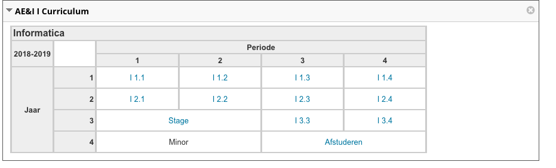
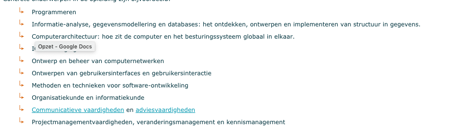

Informatica is de verzamelnaam voor alle opleidingen die gaan over programmeren, data opslag, data sience, data analyse, netwerken en systeembeheer. Dit zijn meteen ook alle kanten die je op kan gaan met het behalen van je hbo diploma
Op de opleiding leer ik programmeren, data opslaan en webdesign. Dit zijn de informatica gerelateerde vakken, maar we hebben ook vakken als bedrijfsprocessen, studievaardigheden en beroepsorientatie waardoor we naast het programmeren ook het bedrijf snappen en technieken kunnen toepassen
Dit is goed terug te vinden in het curriculum van onze opleiding
Na het behalen van je diploma kan je de volgende banen gaan doen:
Minimaal een havo diploma of een goed aansluitende MBO opleiding
De minimum hoeveelheid is 52 punten voor het bindend studieadvies, welke studiepunten je voor het vak kan halen is altijd terug te vinden in de leerwijzer van het desbetreffende vak